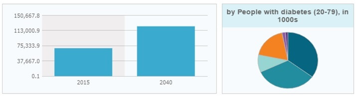

There are 415 million people with diabetes in the world. There will be 642 million people with diabetes in 2040 (International Diabetes Federation, 2015). 60% of diabetics in the world live in Asia (Hu , 2011).
113.9 million adults have diabetes in China, 11.6% of the adult population (Xu et al., 2013). In 1980, the percentage of Chinese adults with diabetes numbered less than 1%. 65.1 million adults with diabetes in India (IDF Diabetes Atlas, 2013). In some South Indian cities, nearly 20% of the population has diabetes.
Diabetes is fast gaining the status of a potential epidemic in India with more than 62 million diabetic individuals currently diagnosed with the disease (Kumar et al., 2013). In 2000, India (31.7 million) topped the world with the highest number of people with diabetes mellitus followed by China (20.8 million) with the United States (17.7 million) in second and third place respectively.
By 2030, without intervention, both China and India combined will have almost half a billion diabetics. Asians have a higher percentage of body fat at the same BMI as whites:
In Caucasians, a BMI of 30 means a body fat percentage of about 25% in young adult males and 35% in young adult females.
A study in China showed that males with a BMI of only 23.7 had 25% body fat and females with a BMI of only 21.2 had 32% body fat (Yoon, 2006).
For the same BMI, Asians have 3-5% higher body fat compared to people of European ancestry. For the same body fat percentage, Asians have a BMI of 3-4 units lower compared to Caucasians.
Almost 1 in 3 cigarettes produced around the globe is smoked in China (Chan et al., 2009).
Studies show that a current smoker has a 45% higher risk of developing diabetes as compared with a nonsmoker. Average amounts of weekly exercise in Chinese adults decreased by 32% between 1991 and 2006.
National Prevalence of Diabetes in Asian Countries
| Country/Territory Name |
National Prevalence of Diabetes (%) |
| Saudi Arabia |
20.2 |
| Kuwait |
17.8 |
| Bahrain |
17.3 |
| Qatar |
15.7 |
| Lebanon |
14.5 |
| Turkey |
14.6 |
| Singapore |
12.3 |
| Malaysia |
10.1 |
| China |
9.6 |
| India |
8.6 |
Source: IDF Diabetes Atlas, 2013
Number of people with diabetes aged 20-79 (both diagnosed and undiagnosed), in 1000s (2015)
| Estimates by country |
| Country |
People with diabetes |
Lower limit of uncertainty interval |
Upper limit of uncertainty interval |
| India |
69,188.6 |
56,168.5 |
84,819.5 |

Source: International Diabetes Federation, 2015
Aetiology of diabetes in India is multifactorial and includes genetic factors coupled with environmental influences such as obesity associated with rising living standards, steady urban migration, and lifestyle changes.
Indians are genetically predisposed to the development of coronary artery disease due to dyslipidaemia and low levels of high density lipoproteins (Misra & Khurana, 2011).
Prevalence of diabetes in rural populations is one-quarter that of urban population for India and other Indian sub-continent countries such as Bangladesh, Nepal, Bhutan, and Sri Lanka(Anjana et al., 2011). large community study conducted by the Indian Council of Medical research (ICMR) revealed that a lower proportion of the population is affected in states of Northern India (Chandigarh 0.12 million, Jharkhand 0.96 million) as compared to Maharashtra (9.2 million) and Tamil Nadu (4.8 million).
Steady migration of people from rural to urban areas, the economic boom, and corresponding change in life-style are all affecting the level of diabetes.
References:
- Kumar A, Goel MK, Jain RB, Khanna P, Chaudhary V. India towards diabetes control: Key issues.Australas Med J. 2013;6(10):524–31.
- Hu FB. Globalization of diabetes: The role of diet, lifestyle, and genes. Diabetes Care. 2011;34(6):1249-1257.
- Xu Y, Wang L, He J, et al. Prevalence and control of diabetes in Chinese adults. JAMA. 2013;310(9):948-59.
- IDF Diabetes Atlas, 6th ed. International Diabetes Federation Web site. http://www.idf.org/diabetesatlas. Published 2013. Accessed March 3, 2013.
- Yoon KH, Lee JH, Kim JW, et al. Epidemic obesity and type 2 diabetes in Asia. Lancet. 2006;368(9548):1681-1688.
- Chan JC, Malik V, Jia W, et al. Diabetes in Asia: epidemiology, risk factors, and pathophysiology. JAMA. 2009;301(20):2129-2140.
- Anjana RM, Ali MK, Pradeepa R, Deepa M, Datta M, Unnikrishnan R, Rema M, Mohan V. The need for obtaining accurate nationwide estimates of diabetes prevalence in India - rationale for a national study on diabetes. Indian J Med Res. 2011;133:369–80.
- International Diabetes Federation. 2015. IDF Diabetes Atlas.
Related Links: